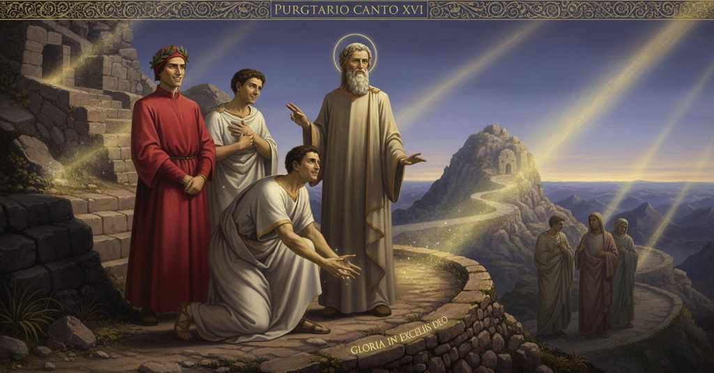

Purgatorio — Canto 21

1
La sete natural che mai non sazia
The natural thirst that is never sated
決して満たされることのない生来の渇きは、
2
se non con l’acqua onde la femminetta
if not with the water for which the little woman
あの小さな婦人が恩寵を求めた水でなければ
3
samaritana domandò la grazia,
of Samaria asked the grace,
癒されぬサマリアの女のそれのように、
4
mi travagliava, e pungeami la fretta
was troubling me, and the hurry spurred me
私を苦しめ、急き立てられる焦りが私を刺し、
5
per la ’mpacciata via dietro al mio duca,
along the encumbered path behind my leader,
魂で混み合う道を我が導き手の後ろについて進み、
6
e condoleami a la giusta vendetta.
and I was grieving at the just vengeance.
そして正しき罰に同情を覚えていた。
7
Ed ecco, sì come ne scrive Luca
And behold, just as Luke writes of it
その時である、ルカが記すように、
8
che Cristo apparve a’ due ch’erano in via,
that Christ appeared to the two who were on the road,
道を行く二人の前にキリストが現れた、
9
già surto fuor de la sepulcral buca,
already risen from the sepulchral pit,
すでに墓の穴から甦られた後に、
10
ci apparve un’ombra, e dietro a noi venìa,
a shade appeared to us, and was coming behind us,
我らの前に一つの影が現れ、後ろからついて来た、
11
dal piè guardando la turba che giace;
from the foot watching the crowd that lies;
横たわる群衆を足元から見つめながら。
12
né ci addemmo di lei, sì parlò pria,
nor were we aware of him, until he spoke first,
我らはそれに気づかず、彼が先に口を開いた、
13
dicendo: «O frati miei, Dio vi dea pace».
saying: “O my brothers, may God give you peace.”
言うには、「我が兄弟たちよ、神が汝らに平和を与えんことを」。
14
Noi ci volgemmo sùbiti, e Virgilio
We turned around suddenly, and Virgil
我らはすぐさま振り返り、そしてウェルギリウスは
15
rendéli ’l cenno ch’a ciò si conface.
returned to him the sign that befits that.
それにふさわしい会釈を返した。
16
Poi cominciò: «Nel beato concilio
Then he began: “In the blessed council
それから彼は始めた、「祝福された公会議において
17
ti ponga in pace la verace corte
may the true court place you in peace,
真実の宮廷がそなたを安らぎに置かんことを、
18
che me rilega ne l’etterno essilio».
which banishes me to the eternal exile.”
私を永遠の追放に閉じ込める宮廷が」。
19
«Come!», diss’ elli, e parte andavam forte:
“How so!” he said, and meanwhile we walked on strongly:
「なんと！」と彼は言った、我らはなおも速足で歩きながら、
20
«se voi siete ombre che Dio sù non degni,
“if you are shades whom God above does not deem worthy,
「もしあなた方が、神が天にふさわしくないとされる影であるなら、
21
chi v’ha per la sua scala tanto scorte?».
who has escorted you so far up his stair?”
誰があなた方をその階段のこれほどまでを導いたのですか」。
22
E ’l dottor mio: «Se tu riguardi a’ segni
And my master: “If you look at the signs
そして我が師は、「もしそなたが、この者が帯び、
23
che questi porta e che l’angel profila,
that this one bears and that the angel traces,
天使が刻んだ印に目を向けるなら、
24
ben vedrai che coi buon convien ch’e’ regni.
you will see well that with the good it is fitting that he reign.
彼が善き者たちと共に統べるべきだとよく分かるだろう。
25
Ma perché lei che dì e notte fila
But because she who spins day and night
しかし、昼も夜も糸を紡ぐ女神が、
26
non li avea tratta ancora la conocchia
had not yet drawn for him from the distaff
彼のためにまだ糸巻きを引き終えていないので、
27
che Cloto impone a ciascuno e compila,
that Clotho imposes on each one and prepares,
クロートが各々に課し、まとめる糸巻きを、
28
l’anima sua, ch’è tua e mia serocchia,
his soul, which is your and my sister,
彼の魂は、そなたと私の姉妹であるが、
29
venendo sù, non potea venir sola,
coming up, could not come alone,
登り来たるに、独りでは来れなかった、
30
però ch’al nostro modo non adocchia.
because it does not see in our way.
我らの様式では見ることができぬゆえに。
31
Ond’ io fui tratto fuor de l’ampia gola
Whence I was drawn from the wide throat
それゆえ私は、広い地獄の喉から引き出され、
32
d’inferno per mostrarli, e mosterrolli
of Hell to show him, and I will show him
彼に道を示すため、そしてさらに示すだろう、
33
oltre, quanto ’l potrà menar mia scola.
further, as far as my school will be able to lead him.
我が教えが彼を導ける限りまで。
34
Ma dimmi, se tu sai, perché tai crolli
But tell me, if you know, why such tremors
しかし教えてくれ、もしそなたが知るならば、なぜあのような揺れを
35
diè dianzi ’l monte, e perché tutto ad una
the mountain gave just now, and why all at once
先ほど山は起こし、そしてなぜ皆が一斉に
36
parve gridare infino a’ suoi piè molli».
it seemed to cry out down to its soft feet.”
その濡れた麓に至るまで叫んだように思えたのか」。
37
Sì mi diè, dimandando, per la cruna
Thus he gave me, by asking, through the eye of the needle
そう問うことで、彼は私の願いの針の穴を
38
del mio disio, che pur con la speranza
of my desire, that just with the hope
通してくれた、希望だけで
39
si fece la mia sete men digiuna.
my thirst was made less fasting.
私の渇きは少し癒されたのだ。
40
Quei cominciò: «Cosa non è che sanza
He began: “There is nothing that without
その人は始めた。「秩序なく
41
ordine senta la religïone
order feels the sacred rule
この山の定めが感じるものは何もなく、
42
de la montagna, o che sia fuor d’usanza.
of the mountain, or that is outside of custom.
あるいは慣わしから外れたものもないのです。
43
Libero è qui da ogne alterazione:
Free is this place from all alteration:
ここはあらゆる変化から自由なのです。
44
di quel che ’l ciel da sé in sé riceve
of that which heaven from itself into itself receives
天が自らから自らのうちに受けるものだけが、
45
esser ci puote, e non d’altro, cagione.
can there be a cause, and not of anything else.
ここでは原因となりえ、他のものではないのです。
46
Per che non pioggia, non grando, non neve,
So that no rain, no hail, no snow,
ゆえに、雨も、雹も、雪も、
47
non rugiada, non brina più sù cade
no dew, no frost falls any higher
露も、霜も、これより上には降りませぬ
48
che la scaletta di tre gradi breve;
than the short little stairway of three steps;
あの短い三つの階段よりも。
49
nuvole spesse non paion né rade,
thick clouds appear not, nor thin,
厚い雲も薄い雲も現れず、
50
né coruscar, né figlia di Taumante,
nor lightning, nor the daughter of Thaumas,
稲妻も、タウマースの娘も、
51
che di là cangia sovente contrade;
who over there often changes her regions;
あの世ではしばしば場所を変える者も。
52
secco vapor non surge più avante
dry vapor does not rise further
乾いた蒸気もこれより先には昇りませぬ
53
ch’al sommo d’i tre gradi ch’io parlai,
than to the summit of the three steps I spoke of,
私が語った三つの階段の頂よりも、
54
dov’ ha ’l vicario di Pietro le piante.
where the vicar of Peter has his feet.
そこにはペテロの代理者がその足を置いています。
55
Trema forse più giù poco o assai;
It trembles perhaps further down, a little or a lot;
おそらくもっと下では、わずかか大いにか、揺れるでしょう。
56
ma per vento che ’n terra si nasconda,
but from wind that is hidden in the earth,
しかし、地中に隠れる風によって、
57
non so come, qua sù non tremò mai.
I know not how, up here it has never trembled.
どうしてかは知りませぬが、この上では決して揺れたことはありません。
58
Tremaci quando alcuna anima monda
It trembles here when some soul feels itself
ここで揺れるのは、ある魂が清められたと
59
sentesi, sì che surga o che si mova
cleansed, so that it rises or moves
感じ、それゆえに立ち上がり、あるいは動いて
60
per salir sù; e tal grido seconda.
to climb up; and such a shout follows.
上へ登ろうとする時です。そして、そのような叫びがそれに続くのです。
61
De la mondizia sol voler fa prova,
Of the cleansing, only the will makes proof,
清められたことの証をするのはただ意志だけで、
62
che, tutto libero a mutar convento,
which, completely free to change its dwelling,
それは、住まいを変えるのに完全に自由となり、
63
l’alma sorprende, e di voler le giova.
surprises the soul, and with its will it helps it.
魂を驚かせ、そして意志することを助けるのです。
64
Prima vuol ben, ma non lascia il talento
Before, it wills well, but the desire does not let it,
以前は善く望みますが、許しませぬ、その傾向が
65
che divina giustizia, contra voglia,
which divine justice, against the will,
それは神の正義が、意志に反して、
66
come fu al peccar, pone al tormento.
as it was for the sin, sets to the torment.
罪を犯した時のように、苦しみへと置くものです。
67
E io, che son giaciuto a questa doglia
And I, who have lain in this pain
そして私は、この苦しみに横たわっていた者ですが
68
cinquecent’ anni e più, pur mo sentii
for five hundred years and more, just now felt
五百年以上も、たった今感じたのです
69
libera volontà di miglior soglia:
a free will for a better threshold:
より良き入り口への自由な意志を。
70
però sentisti il tremoto e li pii
therefore you felt the earthquake and the pious
それゆえあなたは地震と、敬虔な
71
spiriti per lo monte render lode
spirits throughout the mountain render praise
霊たちが山中で賛美を捧げるのを感じたのです
72
a quel Segnor, che tosto sù li ’nvii».
to that Lord, who may He soon send them upward.”
あの主に、主が彼らを速やかに上へ遣わしてくださるようにと」。
73
Così ne disse; e però ch’el si gode
Thus he told us; and because one enjoys
そのように彼は我々に語りました。そして、人は渇きが
74
tanto del ber quant’ è grande la sete,
drinking as much as the thirst is great,
大きいほど飲むことを楽しむものですから、
75
non saprei dir quant’ el mi fece prode.
I could not say how much good he did me.
彼がどれほど私のためになったかは言い表せません。
76
E ’l savio duca: «Omai veggio la rete
And the wise duke: “Now I see the net
そして賢き導き手は言いました。「今や私は網が見えます
77
che qui vi ’mpiglia e come si scalappia,
that ensnares you here and how it is unloosed,
それがここであなた方を捕らえ、いかにして解かれるかを、
78
perché ci trema e di che congaudete.
why it trembles here and in what you rejoice together.
なぜここで揺れ、何に共に喜ぶのかを。
79
Ora chi fosti, piacciati ch’io sappia,
Now who you were, may it please you that I know,
さて、あなたが誰であったか、どうか私に知らせてください、
80
e perché tanti secoli giaciuto
and why for so many centuries you have lain
そして、なぜそれほど多くの世紀を横たわっていたのかを
81
qui se’, ne le parole tue mi cappia».
here, let me grasp it from your words.”
ここで、あなたの言葉から私が理解できるように」。
82
«Nel tempo che ’l buon Tito, con l’aiuto
«In the time that the good Titus, with the help
「善きティトゥスが、至高の王の助けを得て、
83
del sommo rege, vendicò le fóra
of the supreme King, avenged the wounds
ユダによって売られた血が流れた傷に
84
ond’ uscì ’l sangue per Giuda venduto,
from which issued the blood by Judas sold,
復讐を果たしたその時代に、
85
col nome che più dura e più onora
with the name that most endures and most honors
最も永続し、最も誉れ高き名をもって、
86
era io di là», rispuose quello spirto,
was I back there,» replied that spirit,
私はあちらにおりました」と、その魂は答えた、
87
«famoso assai, ma non con fede ancora.
«famous enough, but not yet with faith.
「大いに有名ではありましたが、まだ信仰を持たずに。
88
Tanto fu dolce mio vocale spirto,
So sweet was my vocal spirit,
私の歌の魂はかくも甘美であったので、
89
che, tolosano, a sé mi trasse Roma,
that, a Toulousan, Rome drew me to itself,
トゥールーズ生まれの私を、ローマは自らへと惹きつけ、
90
dove mertai le tempie ornar di mirto.
where I deserved to adorn my temples with myrtle.
そこで私はこめかみをギンバイカで飾るに値しました。
91
Stazio la gente ancor di là mi noma:
Statius the people still name me back there:
あちらの人々は今も私をスタティウスと呼びます。
92
cantai di Tebe, e poi del grande Achille;
I sang of Thebes, and then of the great Achilles;
私はテーバイを歌い、次いで偉大なるアキレウスを歌いました。
93
ma caddi in via con la seconda soma.
but I fell on the way with the second burden.
しかし二番目の荷物を負う道半ばで倒れました。
94
Al mio ardor fuor seme le faville,
The seeds for my ardor were the sparks,
私の情熱の種となったのは、その火花でした、
95
che mi scaldar, de la divina fiamma
that warmed me, from the divine flame
私を温めてくれた、かの神聖な炎の、
96
onde sono allumati più di mille;
by which more than a thousand are lit;
そこから千以上の者が照らされてきた炎の。
97
de l’Eneïda dico, la qual mamma
of the Aeneid I speak, which was a mother
私が言うのは『アエネイス』のことで、詩作において
98
fummi, e fummi nutrice, poetando:
to me, and was a nurse to me, in poetizing:
それは私にとって母であり、私にとって乳母でありました。
99
sanz’ essa non fermai peso di dramma.
without it I did not fix a dram's weight.
それなしには、私は一ドラクマの重みも成しえませんでした。
100
E per esser vivuto di là quando
And to have lived back there when
そして、あちらで生きていたのが、
101
visse Virgilio, assentirei un sole
Virgil lived, I would consent to one sun
ウェルギリウスが生きていた時であったなら、私は追放から解放されるために定められた以上の太陽を
102
più che non deggio al mio uscir di bando».
more than I owe for my release from banishment».
甘んじて受けましょう」。
103
Volser Virgilio a me queste parole
Virgil turned to me with these words,
ウェルギリウスは私にその言葉を向けた、
104
con viso che, tacendo, disse ‘Taci’;
with a look that, in its silence, said ‘Be silent’;
顔つきは、黙りながらも「黙れ」と語っていた。
105
ma non può tutto la virtù che vuole;
but the power that wills cannot do all;
しかし、欲する力は全てをなし得るものではない。
106
ché riso e pianto son tanto seguaci
for laughter and tears are such close followers
なぜなら笑いと涙は、それぞれが湧き出る情熱に
107
a la passion di che ciascun si spicca,
of the passion from which each of them springs,
それほど忠実な従者であるから、
108
che men seguon voler ne’ più veraci.
that they least follow the will in the most truthful.
最も誠実な者において、意志にあまり従わないのだ。
109
Io pur sorrisi come l’uom ch’ammicca;
I only smiled like a man who gives a sign;
私はやはり、目配せする人のように微笑んでしまった。
110
per che l’ombra si tacque, e riguardommi
at which the shade fell silent, and looked at me
そのためにその魂は黙り、私を見つめた、
111
ne li occhi ove ’l sembiante più si ficca;
in the eyes where the expression is most fixed;
表情が最も深く刻まれる目に。
112
e «Se tanto labore in bene assommi»,
and “So may you bring such great labor to a good end,”
そして「この大いなる労苦を良き結末に至らせるために」
113
disse, «perché la tua faccia testeso
he said, “why did your face just now
言った、「なぜあなたの顔は今しがた
114
un lampeggiar di riso dimostrommi?».
show me a flash of a smile?”.
一瞬の笑みを私に示したのですか」。
115
Or son io d’una parte e d’altra preso:
Now I am caught on one side and the other:
今や私は一方と他方に挟まれている。
116
l’una mi fa tacer, l’altra scongiura
one makes me be silent, the other implores
一方は私を黙らせ、他方は私に言うよう懇願する。
117
ch’io dica; ond’ io sospiro, e sono inteso
that I speak; so I sigh, and am understood
ゆえに私は溜息をつき、そして理解される、
118
dal mio maestro, e «Non aver paura»,
by my master, and “Do not be afraid,”
我が師に。そして「恐れるな」
119
mi dice, «di parlar; ma parla e digli
he says to me, “to speak; but speak and tell him
師は言う、「話すことを。だが話し、彼に告げよ
120
quel ch’e’ dimanda con cotanta cura».
what he asks with such great concern.”
彼がかくも熱心に尋ねることを」。
121
Ond’ io: «Forse che tu ti maravigli,
So I: “Perhaps you marvel,
そこで私は、「おそらくあなたは驚いているのでしょう、
122
antico spirto, del rider ch’io fei;
ancient spirit, at the smile I made;
古の霊よ、私が浮かべた笑みに。
123
ma più d’ammirazion vo’ che ti pigli.
but I want you to be taken with more wonder.
しかし、さらなる驚きに捉われてほしいのです。
124
Questi che guida in alto li occhi miei,
This one who guides my eyes on high,
高みへと我が眼を導くこの方こそ、
125
è quel Virgilio dal qual tu togliesti
is that Virgil from whom you took
あなたが力を得た、あのウェルギリウスなのです、
126
forte a cantar de li uomini e d’i dèi.
the strength to sing of men and of gods.
人と神々とを歌うための。
127
Se cagion altra al mio rider credesti,
If you believed any other reason for my smile,
もし私の笑みに他の理由を信じたなら、
128
lasciala per non vera, ed esser credi
leave it as untrue, and believe it to be
それを偽りとして捨て、真実と信じてください、
129
quelle parole che di lui dicesti».
those words that you said of him.”
あなたが彼について語ったあの言葉を」。
130
Già s’inchinava ad abbracciar li piedi
Already he was bending down to embrace the feet
すでに彼は身を屈めて足元を抱こうとしていた、
131
al mio dottor, ma el li disse: «Frate,
of my teacher, but he said to him: “Brother,
我が師の。だが師は言った、「兄弟よ、
132
non far, ché tu se’ ombra e ombra vedi».
do not, for you are a shade and a shade you see.”
やめなさい、そなたは影であり、影を見ているのだ」。
133
Ed ei surgendo: «Or puoi la quantitate
And he, rising: “Now you can comprehend the quantity
そして彼は立ち上がり、「今やあなたは理解できるでしょう、その量を
134
comprender de l’amor ch’a te mi scalda,
of the love that warms me for you,
あなたへと私を熱くさせる愛の。
135
quand’ io dismento nostra vanitate,
when I forget our insubstantiality,
私が我らの虚しさを忘れてしまうほどに、
136
trattando l’ombre come cosa salda».
treating shades as if they were a solid thing.”
影を堅固なものとして扱ってしまうほどに」。